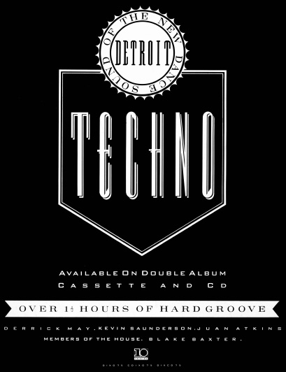

Finding a Home in Britain’s Rave Culture, 1988–1991
FOREIGNERS HAVE ALWAYS TAKEN POP AND ROCK INSTRUMENTAL MUSIC MORE SERIOUS THAN THEIR AMERICAN COUSINS.
STEVE OTFINOSKI, THE GOLDEN AGE OF ROCK INSTRUMENTALS (1997), 85
In order for techno to transcend the inherent obscurity of the American Midwest, it had to literally widen its horizons. Oddly enough, this would happen not in other regions of the United States but across the Atlantic in the United Kingdom. Even more surprisingly, it would happen in only three short years. Between 1988 and 1990, techno would become radically transformed.
British audiences had long been interested in American music, having followed its inventive and soulful sounds all the way back to the Motown and Chess labels of the 1960s and 1970s. By the late 1980s, Chicago’s latest interpretation of soul—house music—had already caught on in London’s clubs and record shops. Steve “Silk” Hurley’s “Jack Your Body” was a hit, the catalogs of DJ International, Trax, and Dance Mania were being combed by British DJs, and house artist Frankie Knuckles had even been interviewed by the British music magazine NME.
What England hadn’t counted on, however, was another wave of musicians from Detroit—perhaps the feeling was that Parliament-Funkadelic, which had released its last record in 1980, was the end of the line. The odd Detroit record did make it overseas—even Was (Not Was) had minor success with “Woodwork Squeaks” in 1981. But through the late 1980s, the United Kingdom’s firmest reference (and reverence) for Detroit was through Motown—especially the smaller, more obscure labels that were owned and/or started by Motown’s producers in their spare time, such as Ric-tic, Wingate, and Golden World. These labels were the focus and prized possessions of England’s “Northern Soul” devotees. Northern Soul was the nickname for the higher-energy American soul records (think “I Can’t Help Myself (Sugar Pie Honey Bunch)” by the Four Tops and go from there). These records were scooped up and danced to in frenetic fashion by fans originally concentrated in England’s northern urban centers in just one of many parallels to the rave culture that would follow a few decades later.
One of the first Brits to hear Detroit’s “new” sound was a fanatical record collector and Northern Soul fan from Birmingham named Neil Rushton. As head of Kool Kat Records, Rushton had been on a record-buying excursion in Chicago, with the ulterior motive of signing some house music acts to his label. While there, he learned about the Detroit sound and altered his travel plans midstream, detouring through Detroit on his way back to England. “I first made contact with Derrick [May],” he recalls. “Derrick came over to England [and] told me about Kevin [Saunderson]. Because of that, I called Kevin and licensed ‘Nude Photo,’ ‘The Sound,’ ‘Our Music,’ and ‘Groovin’ without a Doubt.’ I realized that there was a whole movement there, and we [needed to move quickly] to exploit it.”
Nothing gets past the obsessive record-collector mentality, and Rushton was quick to make the connection between this new sound and Detroit’s legacy of great soul music, even if techno’s artists tended to downplay it. Taking his cue from Motown and its frequent use of compilation albums, Rushton decided to release a compilation of the Detroit sound. As Rush-ton explains: “We’d done an English house record, ‘House Reaction,’ at Virgin and I got to know Mick Clark . . . who’s also an old soul fan. . . . He [Clark] was into this whole idea of Detroit. So I sold him on the idea of doing a compilation, which I suppose was subliminally connected to the old Motown compilations. You’d buy these compilations with twelve acts, like the Marvellettes and the Contours.”
Rushton plunged into the project (which would actually be released on Virgin’s now defunct “10” imprint), even getting right in the middle of some of Detroit’s first battles—including a complicated sampling imbroglio involving Reese & Santonio’s first record, “The Sound,” which, according to Rushton, had been “ripped off” (liberally sampled) by Todd Terry, a pioneer of the New York house sound.
By 1988, Rushton was acting more like a manager than an A&R scout, which is exactly what he had become by the time the compilation project got underway. It all seemed a bit much for one person to sort out from across the Atlantic. Explains Rushton:
Derrick [May] was my main port of call, but I licensed tracks from Derrick, Kevin [Saunderson], and Juan [Atkins]—Transmat, KMS, and Metroplex. . . . We were licensing stuff from people who didn’t actually have the records. That became quite a mess later. Checks that were allegedly forged and all kinds of things between people in Detroit. We basically did a deal where there was a budget of £20,000 [roughly U.S. $31,500]. I [had] told everybody that . . . if it didn’t recoup, there [wouldn’t be any] money ever made. And it never recouped.
Back home in Detroit, Derrick May was doing some scrambling of his own, keeping the dialogue with Rushton going and essentially working as a production coordinator on the compilation. As May recalls, it was one of his busiest times.
I was working with Carl [Craig], helping Kevin, helping Juan, trying to put Neil Rushton in the right position to meet everybody, trying get Blake [Detroit DJ and techno artist Blake Baxter] endorsed so that everyone liked him, trying to convince Shake [Detroit techno producer Anthony Shakir] that he should be more assertive . . . and keep making music as well as do the Mayday mix [for his Street Beat show on WJLB] and run Transmat records. . . . For years, no one [had] cared about what Juan and I were doing in Detroit, and then I found myself dealing with people that were jealous, out of the clear blue sky.
Despite these early rumblings of dissension, the Detroit techno scene was unified enough to push the new compilation forward. At this point, the album’s tentative title was The House Sound of Detroit, with graphics similar to those on the compilations coming from Chicago—but fate had other plans.
One of the last artists to contribute to the compilation was Atkins, who had just returned from an extended trip to California. Atkins turned in a song called “Techno Music,” which used the same integration of speech synthesis Kraftwerk had used throughout its 1981 album Computer World.1 The voice “sang” out repeated refrains of “I program my home computer” and “techno music.” Rushton was instantly prompted to change the compilation’s title to Techno! The New Dance Sound of Detroit. Just like that, the name for Detroit’s dance music was born, setting it apart from house and defining it as a new musical genre in its own right.
Ironically, the song that carried the compilation to its initial prominence was another late add-on—Inner City’s “Big Fun.” Nobody had planned on this experiment becoming the monster hit it did—not even Rushton, who picked it up for the album only after returning to Detroit to finalize the project. As Rushton recalls:
However many tracks we were supposed to deliver to Virgin—ten or twelve—we were still missing one. I had stayed over in Detroit longer than I had planned, canceling my flight and all that, because I had to come back with the whole album. Derrick [May] even made a record while I was there [“It Is What It Is”], and because [the compilation] was short of a track, I stayed up all night while he did that. No one had any tracks—we ran out of ones that were good enough. On the very last day . . . Kevin came over to Derrick’s with a whole load of tapes to sort it out, and he brought “Big Fun.”
As it turned out, “Big Fun” would be a fortunate choice—it went on to become a Top 10 hit on the U.K. Gallup Top 40 in fall 1988, throwing Saunderson and partner Paris Grey into the wild world of pop stardom. Saunderson, who typifies the reserved and introspective techno producer to a degree, initially seemed uncomfortable with his newfound success. But then, Atkins, May, and Saunderson each had his own way of relating to the hype surrounding the compilation. “Kevin, Juan, and Derrick were such good people to interview in different ways,” Rushton offers. “Kevin being really nice and playing the ‘genial giant,’ even though his music’s dead powerful and represents the way he looks. Juan was so soft-spoken [and] interesting, and Derrick because he’s completely mad. People loved Derrick . . . he was a complete star from the moment you met him.”

A SAMPLE OF VIRGIN RECORDS’ MARKETING EFFORTS FOR THE FIRST TECHNO MUSIC COMPILATION IN 1988.
Although perhaps more psychologically prepared than Atkins or Saunderson, May was astounded by the transformation from unknown musical experimentation in Detroit to Virgin’s summer 1988 kickoff party in London.2 Louise Gray of the English magazine City Limits caught up with May right after his arrival in London. In her article “Paradise Revisited,” she described a fraction of the hype surrounding the compilation: “Having spent the last eighteen hours in a studio producing [London’s] Adrenalin MOD for MCA Records,3 his room’s littered with ‘dear Derrick’ letters; Boy George’s on the phone; a mix of Kraftwerk, Ultravox, and Stevie Wonder’s ‘Life of Plants’ is on the ghetto blaster; outside the A&R execs are queuing for the privilege of wining, dining, and signing the twenty-five-year-old—the human face of machine music.”4
Techno’s early success in London was hard to measure. Despite the hype and press coverage of the producers and DJs involved, the Techno! compilation did not sell as well as Virgin had hoped. The simple fact was that it didn’t sit well with buyers or with the collective attention span of London—one of the harshest environments for new musical trends. Though Londoners had accepted techno in the form of club entertainment or isolated singles, perhaps they weren’t yet ready for an entire double album of the music.
Not that London didn’t have its share of early techno adopters and enthusiasts. Among them were writers like Stuart Cosgrove, whose article “Seventh City Techno” was one of the few bits of English press from that era to leak back into the United States. In his article for The Face, Cosgrove asserted that Detroit’s sound “refutes the past” and described it as “post-soul”5—interesting demarcations that further separated techno from Chicago house. Though only partially accurate—techno has an obvious relationship to soul and even to Motown—he helped give the music a new code and mystique that helped grow its U.K. fan base.
In fact, once Rushton and Atkins set Detroit apart with the Techno! compilation, the music took off on its own course, no longer parallel to the Windy City’s progeny. And as the 1980s came to a close, the difference between techno and house music became increasingly pronounced, with techno’s instrumentation growing more and more adventurous. Unfortunately, as techno went on to progress and pick up influences across Europe in the early 1990s, this distinction would become a liability of sorts. American audiences and critics would start associating the term “techno” almost exclusively with harsh European components of the music, and even with the more academic side of electronic music, which has a neat European lineage and explanation. As Atkins explains:
As far as I know, nobody had applied technology to music using that term [“techno”], especially in dance music. You had electronic musicians out there, but most of them were really abstract. Nobody’s claiming that we invented electronic music. Some people tend to think of it that way and they get all bent out of shape. Techno is something that just happened. People looked at you like you have some big, preconceived plan, [but] it’s the general public who designated us to be who we are.
In the wake of the Techno! compilation, things started to happen more organically for the Detroit artists. If nothing else, techno’s introduction to London had given its artists the freedom to explore broader possibilities within the industry. There were, of course, the expected false starts and stunted opportunities. One was a brief chance for Saunderson and May to help produce an album for Herbie Hancock (who has often investigated the latest dance music trends), but Hancock simply lost interest before things got started.
A second opportunity was the idea to form a supergroup with May, Saunderson, and Atkins. The idea was quickly pared down to just May and Atkins, as Saunderson’s success with Inner City left him no choice but to stick with the duo’s trajectory. May and Atkins, who were going to be known as Intellex, were attempting to negotiate a deal with ZTT when things fell apart.6 As Rushton, who was still May’s and Atkins’s manager at the time, recalls:
We started discussions with ZTT—who’s been there since the early days, Art of Noise and all that. They . . . wanted to join in on techno and he had this really dreadful idea that they [May and Atkins] would be the black Pet Shop Boys. I said, “Oh shit, that’s not what we want is it?” But Derrick said, “No, it’ll be great!” We went through all these negotiations [and] got this contract done, a massive, non-exclusive deal . . . and it was a lot of money, really, for what it was.
Unfortunately, communication between May and Rushton got lost because of some other side issue, and the ZTT deal fell through. Rushton explains: “We got an anguished call from [ZTT] saying, ‘We can’t do it because Derrick won’t go on Top of the Pops.’ I said, ‘Well, that’s OK. That’s part of the allure, isn’t it? You can’t have [an underground artist like] Derrick May on Top of the Pops, can you?’ The whole thing collapsed and I got blamed for that. It was an ultimate contrast in expectations—a U.K. record company trying to be hip.”
Despite the first Techno! compilation’s lukewarm reception, there was enough interest and impetus for Virgin to release a follow-up compilation, Techno 2: The Next Generation, in 1990. Techno 2 introduced the new talents of the Detroit scene, such as Carl Craig, Octave One, and Jay Denham (aka Fade 2 Black). Unfortunately, fickle London audiences and the press seemed to have tired of techno for the time being and failed to appreciate the talent and more focused approach of the new compilation. Or, as Octave One’s Lenny Burden puts it, “The fad was over. . . . The second album came out and the people were like, ‘Okay, we’ve heard techno, we need something else.’”
While commercial success and popular appeal temporarily eluded techno, a different type of dance music took London by storm. Acid house, another variant of the Chicago house sound, came into prominence as early as 1985, within only a year of its inception. Named for its psychedelic sounds, “acid” had developed in the mid-1980s when artists like the Chicago house outfit Phuture began experimenting with the Roland TB-303 synthesizer. The 303 was originally marketed as a bassline generator to accompany solo musicians—much the way drum machines were first used. It had a unique onboard sequencer, a resonance filter, and generally a rich or “fat” sound. The result, as Phuture’s Spanky, Herbert J., and DJ Pierre found, was a syrupy squelch that had almost nothing in common with a bass guitar. Instead, the 303 emitted aural equivalents of liquid mercury—the sounds of psychedelic hallucination. The name “acid” was a natural fit.
Phuture’s single “Acid Trax,” released in 1987, featured the 303 in the fore-front and Chicago’s trademark bare-bones drum sound underneath. The song was soon popularized by DJ Ron Hardy—so much so that it became known as “Ron Hardy’s Acid Track.” Several copycats and permutations later, Chicago found itself giving birth to the acid house phenomenon.
By 1988 acid house was blowing London away—the drug connotations of the term “acid” were a perfect complement for the increasingly popular rave movement, providing the catalyst for a monumental cultural shift. Though in many ways they felt foreign to this process, Detroit’s techno artists found themselves getting involved with the new music scene and collaborating with acid house DJs. As a result of these collaborations and their refined DJ skills, they became a bankable talent in the United Kingdom.
Within a year, Detroit DJs were getting booked in English clubs regularly, and weekend junkets turned into extended vacations and career explorations as they began to make friends with similar artists. One of these was the well-established Mark Moore, the producer behind the sample-pop-acid house sensation S’Express. Moore was also the center of a growing transatlantic clique that included English techno artist Peter “Baby” Ford, among others. “[We] were a small group of people that took it [techno and acid house] in quite a deep way,” says Ford. “Techno was some kind of revolutionary musical form—that I still believe. It was crossing cultures, crossing the Atlantic and everything.”
In 1988 both Ford and Moore were signed to the U.K. label Rhythm King, which quickly rose to prominence based on the ingenious song-writing abilities of its dance music artists. Together with Tim Simenon’s Bomb the Bass project, Ford and Moore created some of the most subversive and energetic pop music ever recorded. Ford’s first album, Ford Trax, wasn’t so much an album as a collection of his finest dance tracks (as the title might suggest). “Flowers” and “Chikki Chikki Ahh Ahh” were incredibly dense, psychedelic, and positive singles—even more so than some of the first-generation Chicago acid house offerings. Ford’s follow-up, Ooo, the World of Baby Ford, while perhaps not as successful as Moore’s Original Soundtrack, showed that dance music could cross over, be successful, and still be inventive.
Unlike ZTT (according to Rushton’s critical assessment of it), the Rhythm King label was hip enough to take a chance on untested talent. Case in point was Sarah Gregory, an English makeup artist, painter, and (eventually) singer. Gregory befriended May and protégé Carl Craig during this period of Rhythm King’s heyday, in 1988–89. (Gregory even visited the Music Institute in Detroit, painting a mural on its largest wall.) Eventually, Gregory joined forces with Craig, adding her vocal to a whole series of tracks he had recorded on a small, humble setup on the carpeted floor of a West London flat. This collaboration had the potential to be a great crossover of Detroit and London dance music styles, with May and Ford also lending a hand. Sadly, the project never materialized.7 As Ford explains:
They [Rhythm King] all lost their interest in dance music right about 1992 [and] went into a pop/rock label. It’s all very sad really. Rhythm King started with a . . . really inspired . . . team of people—mainly artists and DJs to start with [such as] Colin Faver, Eddie Richards, Mark Moore, Tim Simenon, and me. There was already a serious group of people . . . maybe not directly running the label, but around. [We were] very productive . . . ideas were taken aboard and exploited, and obviously they [these ideas] were a big commercial success—S’Express and Bomb the Bass went to No. 1 in England [in 1988]. The idea was that it was an underground kind of label with a little bit more of an eye on commercial success.8
Throughout acid house’s 1988–89 reign in London, and its enormous transformative effect on British culture, techno still found a way to remain relevant. May’s Transmat label released the mind-blowing acid EP All for Lee-sah from Chicago artist K. Alexi Shelby, and Saunderson’s KMS label contributed an acidic mix of the Wee Papa Girls’ hit “Heat It Up (It’s Like That),” for which he won a 1989 DMC award for best remix.9 And though acid house nudged techno into the background to some degree, the “idea” of techno survived: the United Kingdom had been introduced to Detroit’s music and was coming to accept its talents and personalities.
While London embraced acid house and techno lingered in the background, a parallel scene was happening across the English Channel, in Belgium. As in England, early house and techno records had begun trickling in from the United States in the mid- to late 1980s, supplementing the huge diet of new wave records that sustained Belgium’s club culture through 1988. This partially explains the advent of a new musical style called “new beat,” an amalgamation of acid house structures with the slower pace and dramatics of European new wave.
For a time, there seemed to be great potential for increased interplay between the scenes in Detroit, London, and Ghent. The success of Saunderson’s 1989 record “Rock to the Beat”—one of the starkest, bleakest techno records—fit perfectly with the slower new beat tempo, giving Saunderson a second international success independent of and parallel to that of “Big Fun.” Says Rushton, “At the Haçienda [a club in Manchester], it [“Rock to the Beat”] was a huge house anthem. But it didn’t really take off [in England], apart from in the north. What happened was that overseas—Belgium, Holland, and France—[people] got into the record and tried to license [it] from London. But [since] they couldn’t . . . they all [recorded] their own versions of it.”
According to journalist Joost DeLijser of Belgium’s Surreal Sound magazine, new beat went a little too far in trying to expand its sound, squeezing out techno in the process. “The Belgian new beat labels monopolized the clubs as well as the major distribution channels, and it was hard to find U.S. records in Belgium,” says DeLijser. “There were maybe three to five stores carrying what little got through.” To complicate matters, there was an increasing proliferation of new beat compilations called This Is New Beat in the United States, released through Polygram Records. So Belgium wasn’t getting any American records and Americans were getting too many of Belgium’s. Other stumbling blocks included cultural and distribution-related gaps between the United States and Belgium—two issues that hadn’t been problems in the U.S.-U.K. relationship.
Belgium was far from being the center of attention that London had become in the dance music world, and techno had yet to conquer its many obstacles. At the very least, however, Belgium gave the music a start on the Continent, familiarizing European audiences with the techno sound to come.
While techno struggled for acceptance in London and Belgium in the late 1980s, other English cities began relating to techno and acid house on a more basic level. In particular, the Northern Soul fans in cities like Birmingham, Sheffield, and Manchester seemed to recognize the loose connection Neil Rushton had drawn between Detroit’s Motown past and its electronic future. In no small way, these fans would help connect England’s general interest in soul music to the new electronic dance sounds coming from Detroit, creating a window of opportunity in an environment where techno was still treated as a mere offshoot of Chicago house. Says Rushton, “In the north of England, there had always been a following for soul records, especially from Detroit. That’s why at the Haçienda, [DJ] Mike Pickering was playing the Detroit records before anyone in London. Like me, he’d grown up on this diet of soul music.”
In fact, in 1988, aside from the concentrated bubble of energy and interest at Rhythm King, one had to travel outside London to Manchester to find Detroit records being played with any frequency. “The Haçienda really got behind those records,” says Rushton. “In Manchester, you’d find all those records: ‘Goodbye Kiss,’ ‘Groovin’ without a Doubt,’ ‘Triangle of Love’—they were all revered. But in [London’s] Spectrum on a Monday night, where you had 1,800 people, they weren’t being played.”
From the very beginning, Manchester’s relationship with techno and acid house was bracketed by the city’s position as a new wave and alternative mecca. Having spawned the Smiths, the Fall, and New Order, Manchester was a heavily band-oriented environment, offset by clubs like the Haçienda (which New Order helped fund). The most unique coming together occurred in Manchester’s indie-rock scene, where bands like the Happy Mondays, the Stone Roses, and Inspiral Carpets took on some of the textures and/or lifestyle of acid house, dubbing their movement and the city “Madchester.” Even for the unconverted, these bands created a kind of psychedelic sound that people could relate to, as well as a bridge to the more purist sounds of native bands 808 State and A Guy Called Gerald.
Thirty or so miles to the east, techno also connected with the city of Sheffield, reaching all the way back to the city’s new wave idols (such as ABC and Heaven 17) and avant-gardists like Cabaret Voltaire. Sheffield had been reaching for soul and funk and feeling with electronic arms since the early 1980s. Detroit techno came at the right time—both to reignite the city’s love for dance music and to legitimize the work of its own artists. The parallels between Detroit and Sheffield are numerous: struggles with an industrial base and near-fatal dependency on it, great musical traditions (Detroit’s Motown and Sheffield’s synth-pop), limited options for youth, and so on.
Two Sheffield natives, Rob Mitchell and Steve Beckett, had seen the connection a mile away; they were already collecting early output from Detroit and Chicago and had opened a record shop called Warp, spawning a label of the same name. Mitchell and Beckett also shared Cybotron’s less-than-humble beginnings, selling ten thousand copies of their first release, Forge-masters’ “Track with No Name.” Their next several releases carried them out of the underground and, completely unexpectedly, into the U.K. Top 40.
Warp’s third record, Sweet Exorcist’s “Test One” (sometimes spelled “Testone” and pronounced “test tone”),10 solidified Warp’s success and defined Sheffield’s techno sound. Released in 1990, “Test One” married the sounds of Yellow Magic Orchestra’s 1980 classic “Computer Games” with a playful use of sampled dialogue from the film Close Encounters of the Third Kind: “Is everybody ready on the dark side of the moon? Play the five tones.” These two sentences led right into the song’s punchy “bleep” sounds and frighteningly low-frequency bass rumble. Sheffield techno was stark, powerful, and playful—the perfect complement to Detroit techno’s complex web of emotions.
Another component of the Sheffield scene—and one that would spread to other U.K. labels and artists—was the use of symbolic computer language. Musicians, bands, and events began hiding behind the signs, acronyms, and nomenclature of machines—years before the reign of the “@” sign and the digital revolution in music, communication, and commerce. Any random browse through a record shop’s techno bin would have revealed names like 808 State, Electribe 101, LFO, Nexus 21, and so on.
The Detroit-Sheffield connection was commodified when Neil Rushton gathered artists from the two cities to appear side by side on Biorhythm, a series of two compilations released on Network Records in 1990. The Biorhythm liner notes, written by English music journalist John McCready, defined its sound as that “of outer London, a collection of mathematical modern music with bleeps,” thus reinforcing the Sheffield aesthetic.
Another interesting development coinciding with the Sheffield “bleep” era was the group Orbital, formed by English brothers Phil and Paul Hartnoll in 1989. Hailing from a suburb southeast of London, the two took their name from the M25 orbital motorway that encircles the city. Orbital became the perfect assimilation of raw synthesized din, Detroit sentimentality, and raver spirituality—a process that began with a small run of one thousand copies of its first single, “Chime.” “Chime” became a classic of rave crowds and attracted the attention of FFRR records, which signed the group to a multi-album deal.11
The artists north of and just outside London both complicated and simplified techno’s original designs, shepherding it from 1988 to the bio-rhythms and bleeps of 1990. Most of these early sounds were strikingly original and carry the same emotional charge as listening to house or techno for the first time. There was an unspoken sense of establishment and accomplishment in the music—a sense that the United Kingdom was no longer dependent on records imported from Chicago and Detroit. These artists were also learning to address the dynamics of large crowds, which was becoming increasingly important as masses flocked to parties and raves across the country.
By the late 1980s, English dance parties had begun spreading beyond London-area clubs like Shoom, Spectrum, and the Trip and into open spaces (farms, warehouses, and even army depots). Free of the constraints of space and the law, parties grew into mass gatherings of thousands and became known as “raves.” The term traces back at least as far as the “rave-ups” of the early 1970s—all-night dance parties within the Northern Soul subculture that started as an extension of 1960s “mod” culture. “Rave” was more than apt to describe the new phenomenon, even if the connection would be lost on most of its new participants.
As raves proliferated, acid house and techno merged with the usage and culture surrounding the drug ecstasy—a connection that seemed to happen overnight but had in fact followed a much more gradual path. Although illegal in Britain since 1977, ecstasy had been used by an insular crowd in the early and mid-1980s, with its heaviest concentration in the fashion and music industries. Most ecstasy usage at this time was still in small, intimate settings—groups of friends in homes and apartments.
Ecstasy use started changing as vacationing Brits came into contact with it on the island of Ibiza, off the coast of Spain. Usage swelled in Ibiza’s hot and hedonistic environment, becoming part of the island’s nightclub ritual and coinciding with some of the earliest house music imports from Chicago. By 1987, the blueprint for “ecstasy culture” was laid out in a style of dance music called Balearic (named for the group of islands to which Ibiza belongs). As vacationers dragged themselves back home to Britain’s more isolated, chillier isles, they attempted to re-create the experience in local clubs. In acid house and techno, ecstasy users found the perfect music to match their hypersensory conditions. Likewise, techno now had legions of blissful Brits as fans—Brits who might otherwise have never set foot in a club or dance music shop. Unfortunately, the price on both sides was understanding.
When the British press caught wind of the acid house drug culture in 1988, it mistakenly publicized the drug of choice as LSD—no doubt basing its assumption on the acid house name. Either way, the concept that electronic dance music was inseparable from a chemically altered consciousness was constantly reinforced by both the uninformed and enthusiasts. Sensationalist fiction appeared in English newspapers and tabloids, written by reporters and editors who couldn’t get past the word “acid” and the images it evoked. The British TV show Top of the Pops banned any song or band with the word “acid” in its name, and some radio entities censored even less discriminately. As Peter Ford recalls:
They banned one of my records [“Chikki Chikki Ahh Ahh”] on Radio One. The refrain was “disco me to ecstasy,” which of course was totally outrageous. It meant “to heaven”—there was no drug connection whatsoever in our minds when we wrote it. But of course they [the radio executives] immediately thought it was about drugs and banned it from Radio One! They went for the drug angle and made everybody aware of it. Then, of course, it [the drug angle] caught on really big-time [with the public].
The press was missing the point, focusing on the music’s superficial novelty rather than its more interesting aspects, which were significantly changing the musical landscape. Says Ford, “It [acid house] wasn’t so much about one instrument but more about basslines and atmospheres—and beats. It was more about an attitude . . . that you could make abstract sounds. Or you could approach the whole thing as an abstract thing—a piece of music that was mutated by 303 or a house/acid track. That was the exciting thing about it.”
The negative connotations of “acid” became as troubling to Detroit’s techno artists as they were to the English establishment. Drugs were almost completely absent in Detroit’s techno scene, small as it was, and the artists were undoubtedly a bit shocked to find their music fused with any kind of drug-related experience. The Music Institute didn’t even serve alcohol, only juice and water. “I’ve never seen such a group of teetotalers—no one drank and no one took drugs,” notes Sarah Gregory. Some, like May, were immediately and vocally at odds with techno’s association with drug culture, and especially with those within the dance music community who helped perpetuate it. Following the surge in Detroit’s crack cocaine sales through the early and mid-1980s, and the lives lost as a result, drugs had become a much more serious matter to techno’s producers. For them, drugs carried deadly connotations.
May became especially incensed at the 1989 New Music Seminar in New York City, where he and house music producer Marshall Jefferson stormed out of a panel discussion called “Wake Up America, You’re Dead.” Many members of the panel were producers from England’s indie-rock scene, which had itself become intertwined with the emerging rave culture. Before an audience made up largely of young hopefuls, Happy Mondays’ producer Nathan McGough admitted that his band had unguarded connections to drugs and criminal activity. Says May, “He didn’t realize that . . . the few frivolous words he said would last longer in these kids’ minds. When I asked him if they [the Happy Mondays] were a bunch of drug dealers, he said yes. He said yes! I hate to say it, but some kid may get killed through shit like that, you never know.”12
Raves had a radical effect on techno and acid house music, which were being exposed to larger and larger crowds, some numbering in the thousands. For DJs at these events, the challenge was to alter their sets to match the “heightened” state of the audience. Heightened serotonin levels called for records (or portions thereof) that had only the most dramatic and energetic qualities—literally the ecstatic moments. There were already a good number of them about—Rhythim Is Rhythim’s “Strings of Life” and Mr. Fingers’ “Can You Feel It,” for example—but the supply was still limited at this early stage. Exactly what comprised a “rave” record was as yet unclear.
What was clear was that music journalists were having a hard time covering the new music scene, struggling between judging techno and its ilk for their functionality and for their purely artistic merit. In this arena, much of Detroit’s musical innovation went undetected—especially that of Derrick May and Carl Craig. Critics argued that conceptual epics like Rhythim Is Rhythim’s “The Beginning” took too long to get to the point. The crowd was rocking the music, not the other way around.
In 1991 raves finally crossed the Atlantic and began exploring America’s “wide-open spaces.” Detroit lost its exclusive claim to being the country’s only techno capital,13 and scenes expanded in New York, Dallas, Los Angeles, and San Francisco. Thus began techno’s ironic existence as an import in the country that had supplied the music in the first place. And, in some part because of this interlude between techno’s genesis in Detroit and its return to the United States, a schism formed between American audiences and the original house and techno producers.
Most of Detroit’s and Chicago’s finest DJs and producers had averaged about twenty-five years of age when they first touched down in London in 1988. By the time Americans were introduced to raves some four years later, these pioneers were thirty or older. In the meantime, no one had been servicing the club circuits back home. The aging African American audience of techno’s past had gone back underground, to smallish close-knit house parties in local halls—ironically, very much like those of its high school days. By the time techno and house DJs began getting booked in the United States again, they faced significant culture and generation gaps. The rave culture had become a youth-oriented movement, centering on primarily white kids less than eighteen years of age, and the old concept of a DJ’s “children” took on a literal meaning.
Putting this predicament and the dangers of teen drug use aside, there are positive aspects to the development of America’s rave landscape. First, its participants took their enthusiasm for house and techno with them as they graduated from high school and college, eventually becoming consumers with more disposable income. Before the collapse of the CD-based music industry aside, the so-called electronica niche became a bit more than a niche. Second, raves inspired a generation of DJs toward new levels of creativity. Support mechanisms and networks across the country created a generation for which raves were much more natural than they could ever be for techno’s pioneers or even for the first generation of British enthusiasts. It might be far-fetched to assume that an entire generation of party-goers took up apprenticeships, but advances in digital mixing capabilities have democratized the art somewhat. For now, the reality of kids in America’s heartland buying Technics 1200 turntables or Ableton Live software and developing “hand/ear coordination” is promising enough.
The oddest characteristics of American raves were the country’s nooks and crannies, which became part of the greater scene. While big cities and college towns served as hubs, hundreds of “pocket universes” existed between them. From the southwest corner of the country to Oklahoma City to resort areas in the Poconos, raves proliferated independently of northern urban centers. Even stranger is the distance ravers traveled to follow events, which were sometimes two or three states apart.
It’s a shame that this scene didn’t live on indefinitely as the twenty-first-century equivalent of the Deadheads or even Phish’s phans or phriends, but ambitious lawmakers caught up with the alternate universe and economies of rave in the name of fighting the abuse of ecstasy. In fact, then senator Joseph Biden sponsored the RAVE (Reducing Americans’ Vulnerability to Ecstasy) Act in 2002, making it a crime for an owner of a venue to knowingly open it up to events where illegal drugs are used. The original bill did not pass, but a similar one (the Illicit Drug Anti-Proliferation Act) made it through in 2003, and has in essence destroyed the entire scene in the name of the War on Drugs.
But techno outlasted the rise and fall of rave, as inseparable as many critics thought the two entities. Before raves hit U.S. shores, techno music went through painful changes as its base grew wider and more diverse. And attempting to make the same jump to American mainstream culture (versus the rave subculture) was a frightening thought. Instead, the nurturing environment of creative, close-knit local scenes has been the general trend, and has been largely successful. Unanswered questions remain about whether raves will ever be reconciled with U.S. club culture. As the rave movement reached critical mass in the United Kingdom, this question was answered by the British government, which passed licensing legislation that in effect prohibited the ravers’ mass gatherings, forcing the remaining diehards to roam the countryside in nomadic packs. Techno and acid house had reached the upper limits of scale in Britain, collapsing back into the guest lists and sexual politics of nightclubs. It just took a while for this to happen in the United States.
So where did all of this transformation leave Detroit? In three short years, northern England had shepherded acid house and techno through 1988’s “Summer of Love” and into the massive exposure of 1990. Acid house, like its pharmaceutical namesake, had taken ravers to a sweltering high of excitement and interest in dance music. And, rather than crash on the way down, ravers were finding solace in the rhythms of techno, which had quietly outlasted its trippy cousin. So how did a comparatively sleepy Midwestern city relate to this movement of global proportions?
At first, Detroit’s creative strata had no answer. Translating techno back into its original “language” after three years of exposure to rave culture was a near impossibility. But instead of dwelling on how far removed they had become, Detroit’s artists decided to change the rules a second time. The answers did finally come—in a fierce musical reassertion and a new generation of world-beaters.